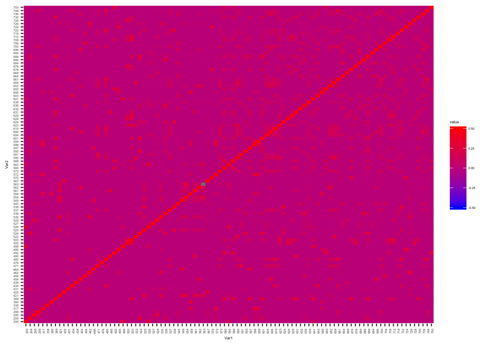
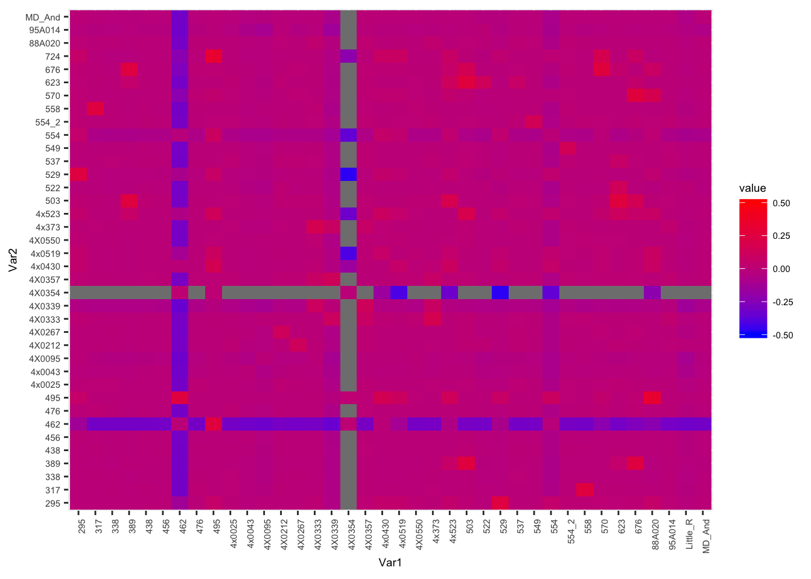
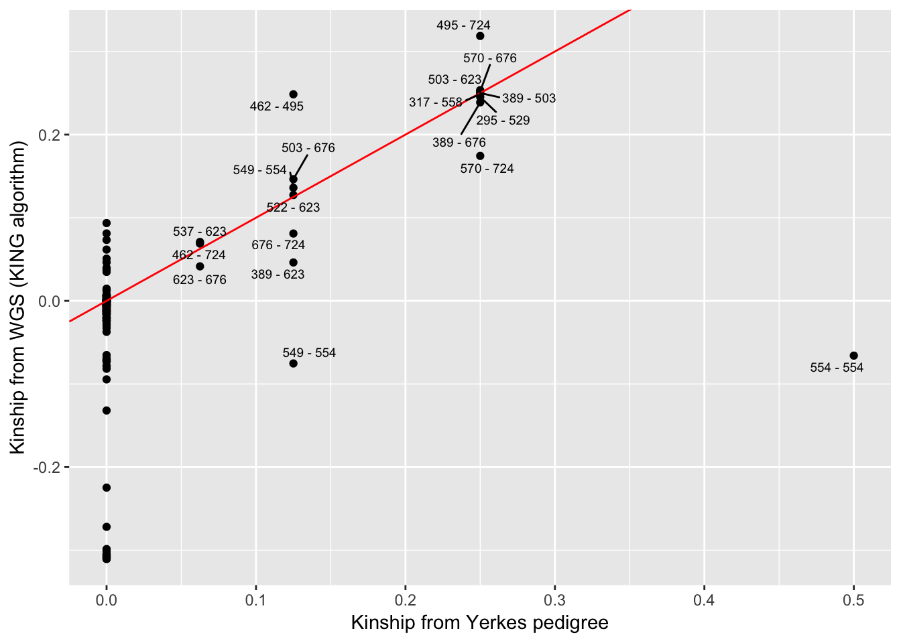

Last updated: 2019-04-03
Checks: 5 1
Knit directory: Comparative_eQTL/analysis/
This reproducible R Markdown analysis was created with workflowr (version 1.2.0). The Report tab describes the reproducibility checks that were applied when the results were created. The Past versions tab lists the development history.
The R Markdown is untracked by Git. To know which version of the R Markdown file created these results, you’ll want to first commit it to the Git repo. If you’re still working on the analysis, you can ignore this warning. When you’re finished, you can run wflow_publish to commit the R Markdown file and build the HTML.
Great job! The global environment was empty. Objects defined in the global environment can affect the analysis in your R Markdown file in unknown ways. For reproduciblity it’s best to always run the code in an empty environment.
The command set.seed(20190319) was run prior to running the code in the R Markdown file. Setting a seed ensures that any results that rely on randomness, e.g. subsampling or permutations, are reproducible.
Great job! Recording the operating system, R version, and package versions is critical for reproducibility.
Nice! There were no cached chunks for this analysis, so you can be confident that you successfully produced the results during this run.
Great! You are using Git for version control. Tracking code development and connecting the code version to the results is critical for reproducibility. The version displayed above was the version of the Git repository at the time these results were generated.
Note that you need to be careful to ensure that all relevant files for the analysis have been committed to Git prior to generating the results (you can use wflow_publish or wflow_git_commit). workflowr only checks the R Markdown file, but you know if there are other scripts or data files that it depends on. Below is the status of the Git repository when the results were generated:
Ignored files:
Ignored: .DS_Store
Ignored: .Rhistory
Ignored: .Rproj.user/
Ignored: analysis/figure/
Untracked files:
Untracked: analysis/20190321_Check-Kinship-And-PopulationStructure.Rmd
Untracked: analysis/20190325_MergingRNASeqLanes.Rmd
Untracked: analysis/20190326_Admixture.Rmd
Untracked: analysis/20190326_PCA.Rmd
Untracked: analysis/20190327_MakeFamAndCovariateFiles.Rmd
Untracked: analysis/20190327_MakeFamPhenotypeFile.Rmd
Untracked: docs/figure/20190321_Check-Kinship-And-PopulationStructure.Rmd/
Untracked: docs/figure/20190325_MergingRNASeqLanes.Rmd/
Untracked: docs/figure/20190326_PCA.Rmd/
Unstaged changes:
Deleted: ._workflowr.yml.swp
Modified: analysis/20190320_Check-RNAseq-PCs.Rmd
Modified: analysis/index.Rmd
Note that any generated files, e.g. HTML, png, CSS, etc., are not included in this status report because it is ok for generated content to have uncommitted changes.
There are no past versions. Publish this analysis with wflow_publish() to start tracking its development.
library(plyr)
library(reshape2)
library(tidyverse)
library(readxl)
library(knitr)
library(ggrepel)# Read in kinship data
YerkesKinship_from_pedigree <- as.data.frame(read_excel("../data/Metadata.xlsx", sheet="Yerkes.coan", col_types = c("text", "text", "numeric")))
kable(head(YerkesKinship_from_pedigree))| ind1 | ind2 | coeff |
|---|---|---|
| 200 | 200 | 0.5 |
| 204 | 200 | 0.0 |
| 295 | 200 | 0.0 |
| 299 | 200 | 0.0 |
| 317 | 200 | 0.0 |
| 338 | 200 | 0.0 |
Kinship_from_KING.WGS <- read.table("../output/PopulationStructure/king.kin", header=T, stringsAsFactors = F)
kable(head(Kinship_from_KING.WGS))| FID | ID1 | ID2 | N_SNP | Z0 | Phi | HetHet | IBS0 | Kinship | Error |
|---|---|---|---|---|---|---|---|---|---|
| Pan_troglodytes_ThisStudy | Little_R | MD_And | 4901461 | 1 | 0 | 0.042 | 0.0277 | -0.0526 | 0 |
| Pan_troglodytes_ThisStudy | Little_R | 4x373 | 4901461 | 1 | 0 | 0.045 | 0.0255 | -0.0250 | 0 |
| Pan_troglodytes_ThisStudy | Little_R | 4x523 | 4901461 | 1 | 0 | 0.046 | 0.0269 | -0.0206 | 0 |
| Pan_troglodytes_ThisStudy | Little_R | 4x0025 | 4901461 | 1 | 0 | 0.044 | 0.0262 | -0.0325 | 0 |
| Pan_troglodytes_ThisStudy | Little_R | 4x0043 | 4901461 | 1 | 0 | 0.043 | 0.0281 | -0.0548 | 0 |
| Pan_troglodytes_ThisStudy | Little_R | 4X0095 | 4901461 | 1 | 0 | 0.042 | 0.0296 | -0.0702 | 0 |
Plot the kinship matrix obtained from Yerkes pedigree data, as well as the matrix obtained from whole genome SNP data…
Yerkes.Matrix <-acast(YerkesKinship_from_pedigree, ind1 ~ ind2, value.var="coeff", fill=0)
melt(Yerkes.Matrix) %>%
ggplot(aes(x=Var1, y=Var2, fill=value)) +
geom_tile() +
scale_fill_gradient(low="blue", high="red", limits=c(-0.5, 0.5)) +
theme(text = element_text(size=4), axis.text.x = element_text(angle=90, hjust=1))
WGS.Matrix <- acast(Kinship_from_KING.WGS, ID1 ~ ID2, value.var="Kinship", fill=0) + acast(Kinship_from_KING.WGS, ID2 ~ ID1, value.var="Kinship", fill=0)
melt(WGS.Matrix) %>%
ggplot(aes(x=Var1, y=Var2, fill=value)) +
geom_tile() +
scale_fill_gradient(low="blue", high="red", limits=c(-0.5, 0.5)) +
theme(text = element_text(size=7), axis.text.x = element_text(angle=90, hjust=1))
Let’s fix a known sample mislabel… 554_2 is actually 554. And 554 is actually unknown.
Kinship_from_KING.WGS$ID1 <- mapvalues(Kinship_from_KING.WGS$ID1, from=c("554_2"), to=c("554"))
Kinship_from_KING.WGS$ID2 <- mapvalues(Kinship_from_KING.WGS$ID2, from=c("554_2"), to=c("554"))Now I want to correlate the kinship-coefficients from Yerkes pedigree to those from the whole genome SNP data (KING algorithm). Easiest way I could think to match up the pairwise kinship coefficients is to make a new field that is the sorted ID pair and then merge the Yerkes coefficient-table to the KING-table by the sorted ID pairs…
KSort <- Kinship_from_KING.WGS %>%
mutate(Teams = paste(pmin(ID1, ID2), pmax(ID1, ID2), sep= " - "))
YSort <- YerkesKinship_from_pedigree %>%
mutate(Teams = paste(pmin(ind1, ind2), pmax(ind1, ind2), sep= " - ")) %>%
distinct(Teams, .keep_all=T)
# Merge and plot
Merged <- merge(KSort, YSort, by="Teams")
Merged$label <- Merged$Team
Merged$label[Merged$coeff==0] <- ""
ggplot(Merged, aes(x=coeff, y=Kinship, label=label)) +
geom_point() +
geom_abline(slope=1, intercept=0, color="red") +
geom_text_repel(size=2.5) +
xlab("Kinship from Yerkes pedigree") +
ylab("Kinship from WGS (KING algorithm)")
# geom_jitter()The expected value of Kinships coefficients from KING seem to match pedigree info, with the exception of sample 554 (not to be confused with 554_2 which for purposes of matching KING coefficients to pedigree coefficients we relabelled as 554) which we had prior knowledge to be a mislabelled sample… Hence why 554 is unrelated to a point labelled 554 (actually 554_2). Assuming sample 554 came from Yerkes, we might be able to correlate its kinship coefficients to other Yerkes chimps to help identify it. Bryan Pavlovic already did this for me by looking at the kinship matrices by hand and concluded that 554 is most likely Booka, but here I will repeat that analysis…
# Find who 554 is related to from whole genome SNP data.
WGS.Matrix['554',] %>%
sort(decreasing=T) %>%
head() %>%
t() %>% kable()| 495 | 4x0430 | 295 | 4x0519 | 529 | 4x523 |
|---|---|---|---|---|---|
| 0.0936 | 0.0561 | 0.0463 | 0.0356 | 0.0348 | 0.0328 |
…554 looks related to 495 (Amos), perhaps 2nd or 3rd degree relationship
# Find who to Amos is related from Yerkes Pedigree
Yerkes.Matrix['495',] %>%
sort(decreasing=T) %>%
head(20) %>%
t() %>% kable()| 495 | 724 | 462 | 646 | 650 | 535 | 726 | 200 | 204 | 295 | 299 | 317 | 338 | 380 | 389 | 421 | 425 | 431 | 434 | 438 |
|---|---|---|---|---|---|---|---|---|---|---|---|---|---|---|---|---|---|---|---|
| 0.5 | 0.25 | 0.125 | 0.125 | 0.125 | 0.0625 | 0.0625 | 0 | 0 | 0 | 0 | 0 | 0 | 0 | 0 | 0 | 0 | 0 | 0 | 0 |
sessionInfo()R version 3.5.1 (2018-07-02)
Platform: x86_64-apple-darwin15.6.0 (64-bit)
Running under: macOS 10.14
Matrix products: default
BLAS: /Library/Frameworks/R.framework/Versions/3.5/Resources/lib/libRblas.0.dylib
LAPACK: /Library/Frameworks/R.framework/Versions/3.5/Resources/lib/libRlapack.dylib
locale:
[1] en_US.UTF-8/en_US.UTF-8/en_US.UTF-8/C/en_US.UTF-8/en_US.UTF-8
attached base packages:
[1] stats graphics grDevices utils datasets methods base
other attached packages:
[1] ggrepel_0.8.0 knitr_1.22 readxl_1.1.0 forcats_0.4.0
[5] stringr_1.4.0 dplyr_0.8.0.1 purrr_0.3.2 readr_1.3.1
[9] tidyr_0.8.2 tibble_2.1.1 ggplot2_3.1.0 tidyverse_1.2.1
[13] reshape2_1.4.3 plyr_1.8.4
loaded via a namespace (and not attached):
[1] tidyselect_0.2.5 xfun_0.6 haven_2.1.0 lattice_0.20-38
[5] colorspace_1.4-1 generics_0.0.2 htmltools_0.3.6 yaml_2.2.0
[9] rlang_0.3.3 pillar_1.3.1 glue_1.3.1 withr_2.1.2
[13] modelr_0.1.4 munsell_0.5.0 gtable_0.3.0 workflowr_1.2.0
[17] cellranger_1.1.0 rvest_0.3.2 evaluate_0.13 labeling_0.3
[21] highr_0.8 broom_0.5.1 Rcpp_1.0.1 scales_1.0.0
[25] backports_1.1.3 jsonlite_1.6 fs_1.2.6 hms_0.4.2
[29] digest_0.6.18 stringi_1.4.3 grid_3.5.1 rprojroot_1.3-2
[33] cli_1.1.0 tools_3.5.1 magrittr_1.5 lazyeval_0.2.2
[37] crayon_1.3.4 pkgconfig_2.0.2 xml2_1.2.0 lubridate_1.7.4
[41] assertthat_0.2.1 rmarkdown_1.11 httr_1.4.0 rstudioapi_0.10
[45] R6_2.4.0 nlme_3.1-137 git2r_0.24.0 compiler_3.5.1